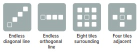
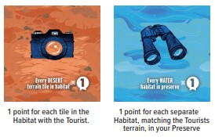

Habitats
Board Game Arena 官方规则文档
Zebras need grassland, gorillas need forest, crocodiles need water, ants need desert, and warthogs need a little bit of everything! Your duty as a wildlife ranger is to provide the habitats necessary for the animals in your African wildlife preserve to thrive. You will also be building watchtowers, access gates, campsites, and tourist spots to stand out as the best preserve in Africa.
Gameplay
The game is played over three years, each lasting the number of turns as indicated on the year marker. Turns proceed clockwise. Each turn you will “Take, Drive, Draw, Place”.
1. Take a Preserve Tile
from directly in front of or on either side of your jeep. You may NOT take the Preserve Tile behind your jeep unless you have no other legal tile to take.
If a jeep is in one of your legal spots to take from, you may take the next tile in that direction.
2. Drive Your Jeep
into the newly empty space, orienting it such that it is driving away from the space it previously occupied.
3. Draw a Preserve Tile
from the bag and place it in the spot your jeep just left.
4. Place the Preserve Tile
you took in step 1 in your Preserve. It must be placed next to an adjacent tile. Tiles with white borders represent the edge of your preserve. No tiles may be placed adjacent to those borders.
In Habitats, adjacent always means orthogonally adjacent, never diagonally.
Camps, Gates, and Watchtowers may be rotated in any direction when placed in a player’s preserve
The start player uses the Turn Tracker to track how many turns they have taken.
Habitats
Tiles are considered to be part of a “Habitat” if they have the same terrain type and are adjacent. Grey background tiles have no terrain type and cannot form a habitat.
Some Preserve Tiles have two terrain types and can extend multiple habitats
Year End
After each player has completed the number of turns shown on the Year Track, the year ends and that year’s two Goal Tiles are scored.
Each Goal Tile specifies a criteria. Score points based on how you rank against your opponents. The exact number of points is shown on the Year Track. In case of a tie, all tied players score the lower point value.
Record players scores on the score board, then reset the turn tracker and play the next year, continuing clockwise in the same turn order.
Game End
After Year 3 is scored, score end game points.
Place Score Markers on Animal, Gate, or Camp tiles when you satisfy their scoring conditions to keep track of which tiles will score.
The player with the most points wins. If tied, all tied players win.
Animals
Animals have required terrain icons.
The Animal scores the points on the tile only if it is adjacent to Habitats that contain the required terrains. The terrain on the animal tile itself does not count.
The Bee, Bumblebee, and Butterfly are slightly different because they require adjacent Flowers instead of terrain. They can be adjacent to the flowers or a group of flowers that are adjacent to each other.
Watchtowers
Watchtowers score the points shown for each scoring Animal or Flower in the designated tiles. Remember you can rotate the tile any direction when adding it to your preserve.

Flowers
Flowers always score 1 point.
Tourists
Tourists score based on having tiles of the same terrain type.

Gates
Gates score the points on the tile only if all sides without a white border have a tile adjacent to them.
Camps
Camps score the points on the tile if every indicated adjacent side has a non-camp tile.
BGA Changes
- Drive and Draw are automatic steps
- Turn tracker is not used
- Tile scoring is done in real time, rather than at the end
- The Habitat scoped tourist tile has been changed to only score "other" tiles in the same habitat.
Common Mistakes
- Animals do not count for their own scoring. Even when their terrain type matches an adjacent tile.
- Camps only score when attached to non-camp tiles. Connecting 2 camps prevents them both from scoring.
- Watchtowers only give points for Scored animals. Incomplete animals grant no watchtower points.